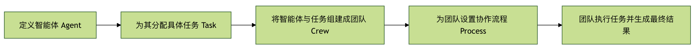
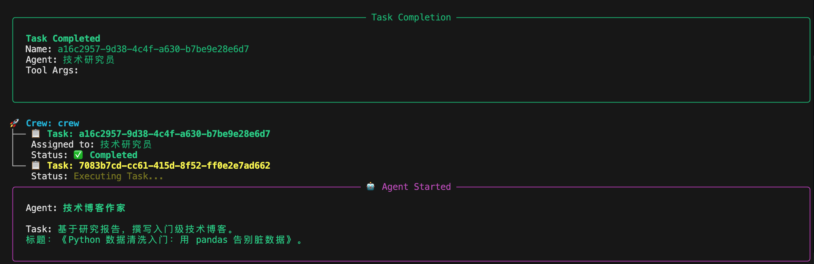
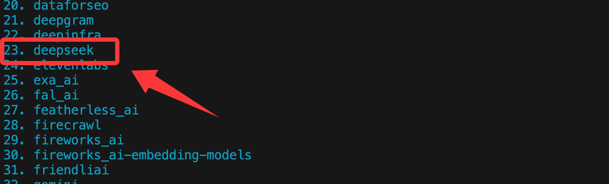

CrewAI でのエージェント作成
CrewAI は、複数の AI Agent が協調して動作するようにオーケストレーションおよび調整するための、マルチエージェント協調のオープンソースフレームワークです。
CrewAI は、複雑なタスクを複数のロールに分割し、それぞれが一部を担当し、プロセスを通じて協力して完了させることができます。
対比して理解する：
- 単一 Agent：1つの大規模モデルが最初から最後まで行う
- CrewAI：プロダクトマネージャー + エンジニア + アナリスト + 編集者が、それぞれの役割を担う
CrewAI は、AI Agent を調整・管理・フレームワーク化するツールであり、LangChain と Pydantic に基づいて構築されています。ロールプレイ、自律性、協調性を持つ Agent チームを促進するために使用されます。
- Crew（チーム）：複数の
Agentから構成されるプロジェクトチーム。 - Agent（メンバー）：チーム内の個々のエージェントで、それぞれが明確な
role（ロール）、goal（目標）とbackstory（バックストーリー）を持ちます。 - Task（タスク）：チームが完了する必要がある具体的な作業。1つの
Crewには、順次または並行の複数のTaskが含まれ、適切なAgent。 - Process（プロセス）：チームのワークフローを定義します。例えば、タスクを順次実行するか、同時に実行するかなどです。
簡単に言えば、crewAI は、誰が（Agent）、どのプロセス（Process）の下で、どのタスク（Task）を完了し、最終的にチーム目標を達成するかを定義する構造化された方法を提供します。
以下のフローチャートは、crewAI フレームワーク内の各コアコンポーネントがどのように連携して機能するかを明確に示しています：

プロセスは、特定のロールと目標を持つエージェント（Agent）を定義することから始まり、そのために具体的なタスク（Task）を作成します。
次に、これらのエージェントとそのタスクをチーム（Crew）として編成し、チームが協力して作業するためのプロセス（Process）、例えば順次実行や並列実行を選択します。最終的に、チームは定められたプロセスに従ってすべてのタスクを実行し、最終結果を生成します。
環境構築とインストール
構築を始める前に、開発環境を準備する必要があります。
前提条件
Python バージョン要件：
- 必須：Python ≥ 3.10 かつ < 3.14
- ターミナルで入力して
python --version確認し、バージョン範囲を満たしていない場合、後続の問題が非常に多くなるため、無理に進めることはお勧めしません。
CrewAI は UV をUV依存関係とパッケージ管理に使用します。目的はただ一つ：
マルチ Agent プロジェクトをより安定させ、環境問題に悩まされないようにするためです。
UV 入門チュートリアル参考：UV - Python のパッケージと環境管理ツール。
API キー：
crewAI 自体は AI モデルを提供しません。OpenAI の GPT、Anthropic の Claude などの大規模言語モデルに接続する必要があります。
crewAI のインストール
ターミナルまたはコマンドラインツールを開き、pip コマンドを使用して crewAI パッケージをインストールします。
# 正常安装 pip install crewai # 其他依赖 pip install langchain pip install openai # 如果安装慢，可以使用国内镜像安装 pip install crewai -i https://mirrors.aliyun.com/pypi/simple/ pip install langchain -i https://mirrors.aliyun.com/pypi/simple/ pip install openai -i https://mirrors.aliyun.com/pypi/simple/
crewAI に組み込まれている高度なツール（Web 検索など）を使用したい場合は、追加の依存関係をインストールできます：
# 正常安装 pip install 'crewai[tools]' # 如果安装慢，可以使用国内镜像安装 pip install 'crewai[tools]' -i https://mirrors.aliyun.com/pypi/simple/
中国国内では DeepSeek 大規模モデルをテストに使用できます。まだ持っていない場合は、まずhttps://platform.deepseek.com/api_keysAPI key を作成してください。
DeepSeek の API ドキュメント参考：https://api-docs.deepseek.com/zh-cn/。
インストールが完了したら、新しい Python ファイルを作成します。例えばmy_first_crew.pyという名前のファイルを作成し、必要なライブラリをインポートします。
CrewAI の LLM がサードパーティモデル（DeepSeek を含む）を使用するには、基盤として必ず LiteLLM を経由する必要があります。使用前にまずインストールする必要があります：
pip install -U litellm
例
from crewai.llm import LLM
# =====================================================
# LLM 設定（DeepSeek｜LiteLLM の正式な記述方法）
# =====================================================
llm = LLM(
model="deepseek/deepseek-v4-flash", # 重要：プロバイダー deepseek を含め、その後にモデル名 deepseek-v4-flash または deepseek-v4-pro を記述します
api_key="sk-xxxxx", # API key を設定
api_base="https://api.deepseek.com/v1",
temperature=0.7,
)
# =====================================================
# Agents
# =====================================================
researcher = Agent(
role="技術リサーチャー",
goal="最新かつ正確で検証可能な技術資料を探し、コードによる証明を示す。",
backstory="技術的な問題を体系的に分析するのが得意で、事実と再現性を重視する。",
llm=llm,
verbose=True,
allow_delegation=False,
)
writer = Agent(
role="技術ブログライター",
goal="研究成果を初心者が読みやすい技術記事に整理する。",
backstory="複雑な概念を明確なステップに分解し、完全な例を提供するのが得意。",
llm=llm,
verbose=True,
allow_delegation=True,
)
# =====================================================
# Tasks
# =====================================================
research_task = Task(
description=(
"深く調査する：Python を使用した自動データクレンジング。"\n"
"重点は、pandas、numpy、欠損値、重複値、フォーマットの不一致問題です。"\n"
"完全で実行可能なコード例を提供しなければならない。"
),
agent=researcher,
expected_output=(
"問題の分類、ソリューションコード、完全なクレンジングプロセスを含む調査レポート。"
),
)
write_task = Task(
description=(
"調査レポートに基づいて、入門者向けの技術ブログを執筆する。"\n"
"タイトル：『Python データクレンジング入門：pandas で汚いデータに別れを告げる』。"
),
agent=writer,
context=[research_task],
expected_output="800 字以上の Markdown 技術ブログ。",
)
# =====================================================
# Crew
# =====================================================
crew = Crew(
agents=[researcher, writer],
tasks=[research_task, write_task],
process=Process.sequential,
verbose=True,
)
# =====================================================
# Run
# =====================================================
if __name__ == "__main__":
result = crew.kickoff()
output = result.raw
with open("python_data_cleaning_blog.md", "w", encoding="utf-8") as f:
f.write(output)
次に、タスクの実行が開始され、関連情報が出力されます：

完了すると、出力された内容が python_data_cleaning_blog.md ファイルに書き込まれます。
以下は、コード内の関連プロパティの説明です。
LLM（モデル層）の主要属性
| 属性 | 例の値 | 機能 | エラー時の影響 |
|---|---|---|---|
model |
deepseek/deepseek-v4-flash |
LiteLLM の規範的な書き方：サービスプロバイダー/モデル名 |
欠けているとdeepseek/直接エラーが発生するLLM Provider NOT provided |
api_key |
sk-xxxxx |
モデル認証 | 空または間違っていると、直接 401 / LLM Failed になる |
api_base |
https://api.deepseek.com/v1 |
DeepSeek API アドレス | 具体的なモデルのアドレスに従う |
temperature |
0.7 |
出力のランダム性を制御する | 高すぎると内容が発散し、低すぎるとテキストが硬直する |
Agent（エージェント）の主要属性
| 属性 | 機能 | 本質 |
|---|---|---|
role |
Agent の「身分タグ」 | システムプロンプトに書き込まれる |
goal |
現在の Agent の核心的な目標 | 回答の方向性を決定する |
backstory |
行動の制約とスタイル | 出力品質を安定させる |
llm |
どのモデルを使用するか | 明示的にバインドする必要がある |
verbose |
実行プロセスを表示する | ログにのみ影響する |
allow_delegation |
タスクの委任を許可するかどうか | 非常にハマりやすい |
researcher（研究者）
| 属性 | 值 | 設計意図 |
|---|---|---|
allow_delegation |
False |
タスクの無限分解を防ぐ |
goal |
資料探し + コード提供 | 出力は「原材料」 |
writer（ライター）
| 属性 | 值 | リスク |
|---|---|---|
allow_delegation |
True |
delegate による再調査を引き起こす可能性がある |
context |
[research_task] |
すでに入力があるため、実際には再度 delegate する必要はない |
結論
順次パイプラインでは、ライティング Agent はdelegation を無効にする必要がある、そうしないと、2回目の委任に失敗しやすくなります。
Task（タスク）の主要属性
Task の共通フィールド：
| 属性 | 機能 | 重要ポイント |
|---|---|---|
description |
LLM に実際に送信されるタスクテキスト | 具体的であればあるほど安定する |
agent |
誰が実行するか | 一意でなければならない |
expected_output |
結果の制約 | 必須ではないが、強く推奨される |
context |
依存する上流タスク | 順次実行の核心 |
research_task:
| 属性 | 説明 |
|---|---|
agent=researcher |
リサーチャーにバインド |
无 context |
第1段階のタスク |
| 出力 | 構造化された研究内容 |
write_task:
| 属性 | 説明 |
|---|---|
context=[research_task] |
研究結果の読み取りを強制する |
agent=writer |
整理と表現のみ行う |
| 出力 | 最終的な Markdown テキスト |
Crew（実行器）の主要属性
| 属性 | サンプル値 | 役割 | エラー時の影響 |
|---|---|---|---|
agents |
[researcher, writer] |
利用可能なすべての Agent | 1つ欠けると即エラー |
tasks |
[research_task, write_task] |
実行キュー | 順序はリストの通り |
process |
Process.sequential |
実行戦略 | 並行実行は依存関係を乱す |
verbose |
True |
ログスイッチ | bool のみ許可 |
kickoff() と出力構造
| 式 | 型 | 用途 |
|---|---|---|
crew.kickoff() |
CrewOutput |
実行結果コンテナ |
result.raw |
str |
最終テキスト出力 |
result.tasks_output |
list/dict | 各 Task の出力 |
result.token_usage |
dict | 統計情報 |
crewai コマンド
私たちは使用できますcrewaiコマンドで完全なプロジェクト構造を生成します：
crewai create crew <项目名>
例えば、プロジェクト サンプル-agent-test を作成する場合、次のコマンドを実行します：
crewai create crew サンプル-agent-test
次に以下の内容が表示されるので、まず大規模言語モデルのプロバイダーを選択できます：
Creating folder サンプル_agent_test... Cache expired or not found. Fetching provider data from the web... Downloading [####################################] 1102019/56339 Select a provider to set up: 1. openai 2. anthropic 3. gemini 4. nvidia_nim 5. groq 6. huggingface 7. ollama 8. watson 9. bedrock 10. azure 11. cerebras 12. sambanova 13. other q. Quit
この章では DeepSeek を選択します。最初に 13 を入力して other を選択し、マウススクロールで DeepSeek が 23 にあることを確認してから、番号 23 を入力します：

他のモデルの API キーを持っている場合は、番号に従って選択してください。
完了すると、生成されたディレクトリは次のようになります：

プロジェクト構造の説明：
my_project/
├── .env # 环境变量（API Key）
├── pyproject.toml # 项目依赖声明
├── README.md
└── src/
└── my_project/
├── main.py # 程序入口
├── crew.py # Crew 与 Agent 的核心逻辑
├── tools/ # 自定义工具
└── config/
├── agents.yaml # Agent 定义
└── tasks.yaml # Task 定义
自分の Crew を実行する
プロジェクトのルートディレクトリに移動：
cd my_project
依存関係をロックしてインストール：
crewai install
実行：
crewai run
または直接：
python src/my_project/main.py
API キーの設定
安全性のため、API キーをコードに直接書くことはお勧めしません。環境変数として設定できます。
コード内で設定（テスト専用）：
import os os.environ["OPENAI_API_KEY"] = "你的-openai-api-key-here"
推奨方法：.envファイルを使用します
プロジェクトのルートディレクトリに.envという名前のファイルを作成します。
ファイルに次の内容を記述します：OPENAI_API_KEY=你的-openai-api-key-here
Python コードでは、python-dotenvパッケージを使用して読み込みます。
インストールコマンド：
pip install python-dotenv
次にコード内で読み込みます：
from dotenv import load_dotenv load_dotenv() # 这会自动加载 .env 文件中的变量 # 现在 os.environ["OPENAI_API_KEY"] 就已经有了值
核心コンポーネントの詳解と実践
さあ、会社を設立するように、ステップバイステップで AI チームを作成しましょう。技術ブログ制作チームをシミュレートします。
ステップ1：エージェント (Agent) を定義する
Agentはあなたのチームメンバーです。作成時にはいくつかの主要な属性を定義する必要があります：
| パラメータ | 説明 | 例 |
|---|---|---|
| role | エージェントの役割または職位。 | シニア技術ライター |
| goal | エージェントの最終目標。 | わかりやすく実用的な技術チュートリアルを作成する |
| backstory | ロールの背景ストーリー。行動や口調を形成するために使用します。 | 你是一位拥有10年全栈开发经验的开发者，热爱分享，擅长将复杂概念简单化。 |
| llm | エージェントが使用する大規模言語モデルを指定します。 | ChatOpenAI(model="gpt-4", temperature=0.7) |
| verbose | に設定するとTrue、エージェントの詳細な思考プロセスが出力されます。 |
True（デバッグ時に非常に便利） |
| allow_delegation | このエージェントが他のエージェントにタスクを委任できるかどうか。 | True |
2つのエージェントを作成しましょう：1つはリサーチャーと、もう1つはライター。
例
llm = ChatOpenAI(model="gpt-3.5-turbo", temperature=0.7)
# リサーチャーエージェントを作成
researcher = Agent(
role='技術リサーチャー',
goal='割り当てられたテーマについて、最新かつ正確で関連性の高い技術情報を探します。',
backstory='あなたは集中力と厳密さを備えたテクニカルアナリストです。大量の情報から重要なポイントを抽出し、情報源の信頼性を検証するのが得意です。',
llm=llm, # 上で定義したモデルを使用
verbose=True, # 詳細なログを出力
allow_delegation=False # リサーチャーはタスク委任の必要はありません
)
# ライターエージェントを作成
writer = Agent(
role='技術ブログライター',
goal='リサーチャーが提供した資料に基づき、構造が明確で、生き生きとして面白く、コード例が完全な技術ブログ記事を作成します。',
backstory='あなたは人気の高いテクニカルブロガーです。親しみやすい文体で論理も厳密であり、特に比喩や実例を使って複雑な概念を説明するのが得意です。',
llm=llm,
verbose=True,
allow_delegation=True # ライターは必要に応じてタスクを委任できます（例：リサーチャーに資料の補足を依頼する）
)
ステップ2：タスク (Task) を作成する
Taskは具体的な作業項目であり、Agentに割り当てて完了させる必要があります。主要な属性は次のとおりです：
| パラメータ | 説明 | 例 |
|---|---|---|
| description | タスクの明確な説明。 | 研究 "Python异步编程asyncio" 在 2023 年后的核心应用场景和最佳实践。 |
| agent | このタスクの実行を担当するAgentオブジェクト。 |
researcher |
| expected_output | タスク成果物の詳細な説明。 | 一份结构化的研究报告，包含概述、3-4个核心应用场景、2-3个代码片段示例以及总结。 |
リサーチャー用とライター用にそれぞれタスクを作成します。
例
research_task = Task(
description=(
"「Python を使用した自動化データクリーニング」というテーマについて深く調査します。\n"
pandas と numpy ライブラリの最新の使い方（2023年以降）、一般的なダーティデータの問題（欠損値、重複値、形式の不整合など）、および効率のなクリーニング手順に重点を置きます。\n"
各ステップを説明する具体的なコードスニペットを提供してください。
),
agent=researcher, # このタスクはリサーチャーに任せる
expected_output=(
"以下の形式の完全な調査レポート：\n"
"1. テーマの概要\n"
"2. 一般的なデータ問題の分類（少なくとも3種類）""\n"
"3. 各問題カテゴリに対する pandas/numpy の解決策（コードスニペット付き）\n"
"4. 完全なエンドツーエンドのクリーニング手順の例\n"
"5. まとめと提案"
)
)
# ライティングタスクを作成
write_task = Task(
description=(
"リサーチャーが提供した調査レポートを活用して、初心者向けの技術ブログ記事を作成します。\n"
"記事のタイトルは「Python データクリーニング入門：pandas でダーティデータに別れを告げる」です。\n"
記事の要件：わかりやすい言葉で、論理を段階のに進め、リサーチャーが提供したすべての主要なコードスニペットを含め、詳細なコメントを追加すること。\n"
"最後に、シミュレーションデータセットをクリーニングする全プロセスを示す、完全で実行可能な例を提供してください。"
),
agent=writer, # このタスクはライターに任せる
expected_output=(
"800字以上の Markdown 形式のブログ記事。\n"
"導入、本文（節に分ける）、コードブロック、まとめを含むこと。\n"
"文末には、シミュレーションデータとクリーニングコードを含む完全な Python スクリプトを必ず添付すること。"
),
# context パラメータは非常に重要です！このタスクの依存関係を指定し、まず research_task を完了する必要があります
context=[research_task]
)
注意 write_task内のcontext=[research_task]、これによりタスク間の依存関係が確立され、ライターはリサーチャーがタスクを完了するのを待ってから作業を開始する必要があります。
ステップ3：チームを編成してプロセスを設定する (Crew & Process)
次に、AgentとTaskを組み立ててCrew、彼らの作業を定義しますProcess。
例
blog_crew = Crew(
agents=[researcher, writer], # チームはどのメンバーで構成されるか
tasks=[research_task, write_task], # チームにはどのようなタスクがあるか
process=Process.sequential, # プロセスタイプ：順次実行。リサーチャーが終了したら、ライターが行います。
verbose=2 # チーム実行時のログ詳細レベルを設定 (0=サイレント、1=基本、2=詳細)
)
crewAI は主に2つのプロセスをサポートします：
Process.sequential：タスクはリスト内の順序に従って順番に実行されます。厳密な依存関係を持つパイプライン作業に適しています。Process.hierarchical：マネージャー（Manager）Agent と連携し、それがタスクを調整および割り当てます。より複雑で動的なコラボレーションシナリオに適しています。
ステップ4：タスクを実行して結果を取得する
すべての準備が整いました。AI チームを起動しましょう！
例
result = blog_crew.kickoff()
# 最終結果を出力
print("###################### 最終成果 ######################")
print(result)
あなたの Python スクリプトを実行します（python my_first_crew.py）。先ほど設定したverbose=Trueとverbose=2により、ターミナルで各 Agent の思考プロセスとタスク実行ログが表示され、最後に生成されたブログ記事が表示されます。
応用テクニック：Agent にツール (Tools) を装備する
crewAI では、Agent外部（ツール）を呼び出せますTool、例えばウェブ検索、データベース照会、計算の実行など。
以下の例では、リサーチャーにウェブ検索と計算ツール：
例
# ツールを初期化する
# 注意：SerperDevTool には別途 API Key が必要です。https://serper.dev/ で登録して取得してください。
search_tool = SerperDevTool(serper_api_key="あなたの-serper-api-key")
calc_tool = CalculatorTool()
# ツールを装備したリサーチャーを作成する
advanced_researcher = Agent(
role='シニア技術リサーチャー',
goal='最新の技術動向を検索し、定量分析を行う',
backstory='あなたは情報を見つけるのが得意なだけでなく、データの簡単な計算と比較もできます。',
tools=[search_tool, calc_tool], # ツールリストをエージェントに割り当てる
llm=llm,
verbose=True
)
# ツールを使用するタスクを作成する
analysis_task = Task(
description=(
"GitHub上での過去1年間の 'FastAPI' と 'Django' の Star 増加数を検索して比較してください。\n"
"両者の成長率を計算し、考えられる原因を分析してください。"
),
agent=advanced_researcher,
expected_output=具体的なデータ、計算プロセス、原因分析を含む簡潔なレポート。
)